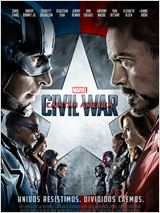
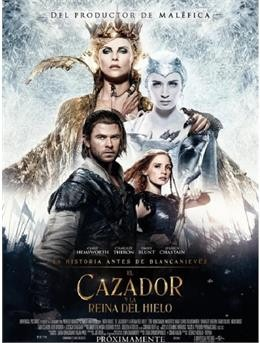
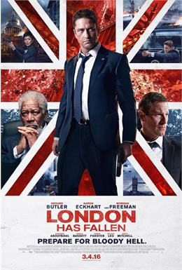

Actor: Chris Evans
Director: Anthony y Joe Russo
Genero: Superheroes, Ciencia Ficcion
Sipnosis
Capitán América: Civil War' sigue a Steve Rogers liderando al nuevo equipo de Vengadores en sus continúos esfuerzos para mantener a salvo a la humanidad. Pero después de los daños colaterales de otro incidente en el que el grupo de superhéroes está involucrado, la presión política instala un sistema de responsabilidad encabezado por el Gobierno para supervisar y dirigir al equipo. El nuevo ‘status quo’ provoca la ruptura de los Vengadores y da como resultado dos bandos -uno liderado por Steve Rogers y su deseo de que los superhéroes sigan siendo libres para defender a la humanidad sin la intromisión del Gobierno y otro liderado por Tony Stark que decide apoyar la decisión de la clase dirigente.
Actor: Michelle Jenner
Director: Enrique Gato
Genero: Animacion, Aventura, Comedia
Sipnosis
Cuenta la historia de Richard, un ambicioso multimillonario, quién quiere apropiarse de la luna y explotar la fuente de energía. Para ello, deberá borrar de la historia la gesta de los astronautas del Apolo XI y sus famosos primeros pasos por la Luna. El único capaz de impedirlo es el simpático y decidido surfista de 12 años, Mike Goldwing, quien con la ayuda de sus amigos, su abuelo y una peculiar iguana, lucharán por conseguir la bandera más importante de la historia y salvar el futuro de la Tierra.
Actor: Bruce Reitherman
Director: Wolfgang Reitherman
Genero: Animacion
Sipnosis
El libro de la selva es una nueva epopeya de acción real sobre Mowgli, un niño al que cría una manada de lobos. Mowgli comprende que debe dejar la selva ya que el tigre Shere, que lleva las cicatrices del Hombre, promete eliminar lo que considera una amenaza. Se ve obligado a abandonar el único hogar que ha conocido en toda su vida y se embarca en un fascinante viaje de autodescubrimiento.
Actor: Chris Hemsworth, Charlize Theron
Director: Cedric Nicolas-Troyan
Genero: Fantasia, Aventura, Drama
Sipnosis
Con la habilidad de congelar a cualquier enemigo, Freya, la joven y poderosa Reina de Hielo, se ha dedicado a entrenar una legión de hábiles y fuertes guerreros cazadores. Pero Eric y Sara desafiarán la única condición impuesta por la reina: mantener su corazón helado frente al amor. Al sentirse traicionada por ambos guerreros, Freya busca impedir su relación amorosa. Será entonces cuando la malvada Reina del Hielo ordenará traer de vuelta el Espejo Mágico para resucitar a su hermana del abismo, la temible Reina Ravenna.
Actor: Gerard Butler
Director: Babak Najafi
Genero: Suspenso
Sipnosis
Tras el fallecimiento del primer ministro británico en extrañas circunstancias, todos los líderes mundiales se reúnen para su funeral. Pero existen planes para que el acto, que cuenta con la mayor seguridad del planeta, sea una oportunidad para acabar con los mandatarios y sembrar el caos en todo el mundo. El presidente de los Estados Unidos y sus colaboradores del Servicio Secreto son los únicos capaces de evitar la tragedia.
![ Capitan America Civil War Actor: Chris Evans Director: Anthony y Joe Russo Genero: Superheroes, Ciencia Ficcion Sipnosis Capitán América: Civil War' sigue a Steve Rogers liderando al nuevo equipo de Vengadores en sus continúos esfuerzos para mantener a salvo a la humanidad. Pero después de los daños colaterales de otro incidente en el que el grupo de superhéroes está involucrado, la presión política instala un sistema de responsabilidad encabezado por el Gobierno para supervisar y dirigir al equipo. El nuevo ‘status quo’ provoca la ruptura de los Vengadores y da como resultado dos bandos -uno liderado por Steve Rogers y su deseo de que los superhéroes sigan siendo libres para defender a la humanidad sin la intromisión del Gobierno y otro liderado por Tony Stark que decide apoyar la decisión de la clase dirigente.](img/civil.jpg){kind=link}
![Atrapa La Bandera Actor: Michelle Jenner Director: Enrique Gato Genero: Animacion, Aventura, Comedia Sipnosis Cuenta la historia de Richard, un ambicioso multimillonario, quién quiere apropiarse de la luna y explotar la fuente de energía. Para ello, deberá borrar de la historia la gesta de los astronautas del Apolo XI y sus famosos primeros pasos por la Luna. El único capaz de impedirlo es el simpático y decidido surfista de 12 años, Mike Goldwing, quien con la ayuda de sus amigos, su abuelo y una peculiar iguana, lucharán por conseguir la bandera más importante de la historia y salvar el futuro de la Tierra.](img/atrapa.jpg){kind=link}
{kind=link}
![ El Cazador y la Reina de Hielo Actor: Chris Hemsworth, Charlize Theron Director: Cedric Nicolas-Troyan Genero: Fantasia, Aventura, Drama Sipnosis Con la habilidad de congelar a cualquier enemigo, Freya, la joven y poderosa Reina de Hielo, se ha dedicado a entrenar una legión de hábiles y fuertes guerreros cazadores. Pero Eric y Sara desafiarán la única condición impuesta por la reina: mantener su corazón helado frente al amor. Al sentirse traicionada por ambos guerreros, Freya busca impedir su relación amorosa. Será entonces cuando la malvada Reina del Hielo ordenará traer de vuelta el Espejo Mágico para resucitar a su hermana del abismo, la temible Reina Ravenna.](img/cazador.jpg){kind=link}
![ Lóndres Bajo Fuego Actor: Gerard Butler Director: Babak Najafi Genero: Suspenso Sipnosis Tras el fallecimiento del primer ministro británico en extrañas circunstancias, todos los líderes mundiales se reúnen para su funeral. Pero existen planes para que el acto, que cuenta con la mayor seguridad del planeta, sea una oportunidad para acabar con los mandatarios y sembrar el caos en todo el mundo. El presidente de los Estados Unidos y sus colaboradores del Servicio Secreto son los únicos capaces de evitar la tragedia.](img/londres.jpg){kind=link}